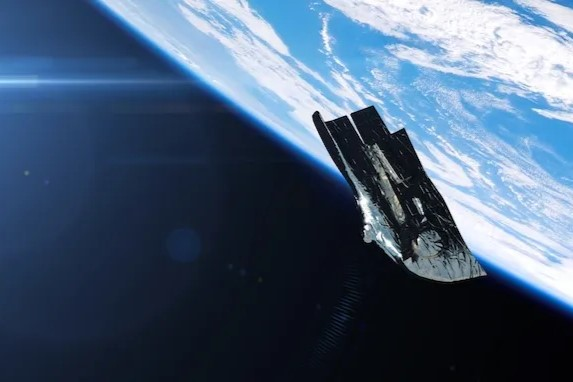

On Tuesday (Sept. 17), the FAA announced that it plans to fine SpaceX $630,000 for allegedly skirting regulations on two launches last year. SpaceX founder and CEO Elon Musk responded to the news that same day, declaring on X (formerly Twitter) that the company intends to sue the FAA "for regulatory overreach."
The two missions cited by the FAA were PSN SATRIA, an Indonesian communications satellite that rode to orbit atop a Falcon 9 rocket on June 18, 2023, and EchoStar XXIV/Jupiter 3, another telecom craft, which lifted off on a Falcon Heavy on July 28 of that year.
Both launches occurred on Florida's Space Coast PSN SATRIA from SpaceX's pad at Cape Canaveral Space Force Station and EchoStar XXIV/Jupiter 3 from Pad 39A at NASA's Kennedy Space Center (KSC), which is right next door.

The FAA claimed SpaceX violated two regulations on the PSN SATRIA launch: The company used a new launch control room and removed a readiness poll (usually taken two hours prior to liftoff) without waiting for either modification to be approved. The company had submitted a request to make those revisions, but that request had not been approved by the time of liftoff, according to the FAA.
Irish Smith
Astronomy is a window into the universe's grand design, revealing the intricate dance of stars, planets, and galaxies across unimaginable distances. By studying celestial phenomena like supernovas and cosmic radiation, we gain insight into the universe's origins and its future. Each observation deepens our connection to the cosmos, showing us how the same forces that shaped distant galaxies are at work in our own world. This pursuit of knowledge not only satisfies our curiosity but also expands our understanding of existence itself.
Reply
Johannes Kepler
Astronomy invites us to explore the universe’s wonders, from the closest planets to the farthest galaxies. It reveals the incredible scale and complexity of space, where forces like gravity and dark matter shape the cosmos. By observing celestial events such as eclipses, meteor showers, and nebulae, we gain insights into the life cycles of stars and the mysteries of space. As technology advances, our ability to peer deeper into the universe grows, continuing to fuel our quest for knowledge and our fascination with the unknown.
Reply
Chintan Patel
Astronomy is the science that connects us to the vastness of the universe, offering a deeper understanding of the cosmos and our place within it. By studying stars, planets, and distant galaxies, we unlock the secrets of how the universe began and how it evolves over time. The night sky, filled with celestial wonders, inspires a sense of awe and curiosity that drives scientific exploration. With each discovery, astronomy not only expands our knowledge but also reminds us of the beauty and mystery that lies beyond our world.
Reply
Galileo Galilei
Astronomy bridges the gap between science and wonder, offering a glimpse into the unknown reaches of the universe. As we study stars, planets, and galaxies, we uncover the fundamental laws that govern the cosmos. Each discovery, from black holes to exoplanets, deepens our understanding of space and time. This pursuit of knowledge not only answers questions about our universe but also sparks new ones, keeping the exploration alive.
Reply
Carl Sagan
Astronomy is a fascinating field that allows us to explore the vastness of the universe and our place within it. From studying distant galaxies to understanding the movement of planets, it reveals the mysteries of space and time. Through advanced technology, we can now observe celestial bodies in incredible detail, providing new insights into their origins. This ever-evolving science continues to inspire curiosity and a deeper connection to the cosmos.
Reply
Jean Doe
Astronomy opens our eyes to the infinite scale and beauty of the universe, stretching far beyond what we can see with the naked eye. It helps us understand how celestial bodies interact, from the birth of stars to the formation of galaxies. Each night sky holds countless mysteries waiting to be unraveled, reminding us of our small yet significant role in the cosmos. Through exploration and discovery, astronomy continues to ignite human curiosity and wonder about the unknown.
Reply